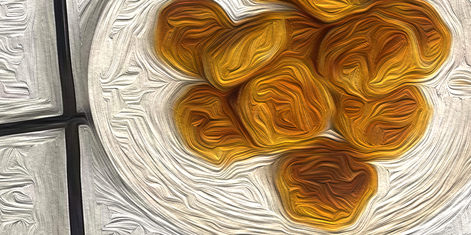

Avinžirnių kotletai

Aprašymas
Gal atsibodo griaužt save nes žinai, kad paskutinius 2 mėnesius visišką šlamštą?
Nori laižytis pirštus ir justis axujenu nes žinai, kad valgai sveikai? Šie avinžirnių kotletai (kroketai)
yra puikus pasiūlymas jums....
Lengvai pagaminami, skanūs bei sotūs.... Ko lauki? Einam gamint!
Ingredientai
- Pupelės
- Avinžirniai
- Prieskoniai jūsu pasirinkimo
- Kiaušinis
- "Grietine
- Pienas
- Miltai
- Pievagrybiai
- Buljonas
Paruošimo būdas
- Sutrinkit avinžirnius bei pupeles, įmuškit kiaušinį, įsiberkite mėgstamų prieskonių, gerai išmaišius ir
suformavus kotleto formas - dėkite į keptuvę.
- Atskiroj keptuvėje į keptuvę iberkite šiektiek miltų ir laukite kol pakeps, poto supilkite grietinę, pieną ir buljoną, išmaišykite.
Poto sudėkite pievagrybius ir virkite 5 minutes
- Viską paruošus sudėkite kotletus į jūsu pagamintą padažą ir leiskit kelias minutes kroketams pasitroškint
Skanaus :)
Atgal į viršų
Grįžti į pradine svetaine